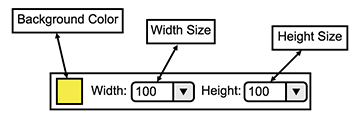
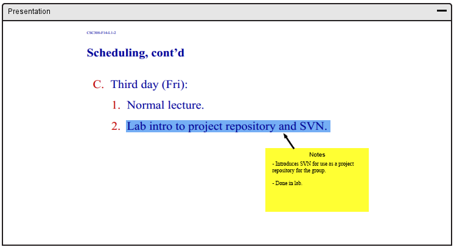

The notes tool gives the ability for the user to add "sticky notes" to the canvas.
In response to the user clicking the notes tool icon, the overall toolbar is replaced and displays options to add notes to the canvas as a sticky note. An overview of the notes options toolbar is shown in Figure 51.

Figure 51: Notes Toolbar Overview.
The notes option toolbar has several options including:

Figure 52: Adding notes.